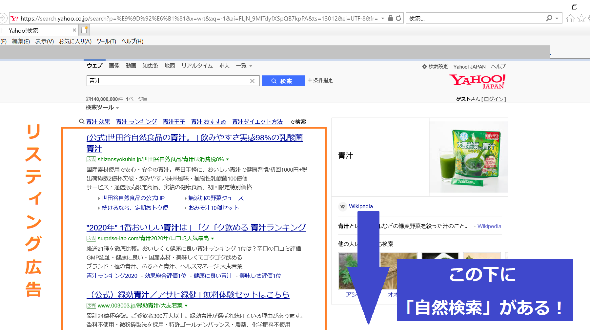

最近よく聞くSEOっていったい何？
あなたの疑問を徹底解決！
こんな人におすすめ！
- SEOってそもそもなに？？ってなっている人
- SEOをしっかり強化しなければならない理由を知りたい人
- これからSEO対策をしていきたいと考えている人
- そもそもSEOとは？
- SEOをしっかり強化しなければいけない理由
- SEO対策をする方法
- まとめ
そもそもSEOとは？
SEOとは”Search Engine Optimazation”の略で、日本語では「検索エンジン最適化」と呼ばれています。
「検索エンジン最適化」とは、わかりやすく言うと、
「どれだけ検索順位を上げられるか」ということです！
例えば、Yahoo!やGoogleで「青汁」と検索してみてください。
一番上の方には小さく「広告」と書かれた記事がいくつか並んでいますよね？
それがいわゆる「リスティング広告」というものです。（ここでは、リスティング広告については詳しく説明はしません）
皆さんの実体験で、このリスティング広告を積極的にクリックしようと考えますか？
多くの人がこの広告を避けるために少し下にスクロールするはずです。
そこで、初めて出てくるのが、「自然検索」と呼ばれる広告ではない記事です。

皆さんは、「広告以外の」検索順位が高いものから閲覧するクセがありませんか？？
そのため、企業側からすると、「自然検索の順位」が売り上げに直結するほどすごく大事なものなのです！
SEOをしっかり強化しなければいけない理由
自社の売り上げを上げるならばリスティングなどの広告を出せばいいのでは？
という声も上がるはずです。
しかし、ここはお互いのメリット・デメリットを考える必要があります。
リスティング広告のメリット
・即効性がある
・リアルタイムで効果が分かる
・クリック課金制なので、無理ない資金で始められる
リスティング広告のデメリット
・永続的にコストがかかる
・クリック率が悪い
SEO対策のメリット
・コストが一切かからない
・緊急度が高く、急いでいるお客様と出会える⇒売上UPへ
・会社に「知的財産」として溜まっていく
SEO対策のデメリット
・効果が出るまで時間がかかる
・キーワードによっては上位表示の難易度が非常に高い場合がある
このように、お互いにメリットとデメリットは存在します。
SEOはうまく上位表示までこぎつければ、無料で検索結果の一ページ目に自社のWebサイトを表示することができます。
リスティング広告に比べてクリック率も高い傾向になるので、長期的な視野で考えて、SEOにしっかりと取り組むべきです！
Webサイトを公開した直後は、リスティング広告からの集客に頼り、SEOでの上位表示ができてきたら広告費用を減らし、SEOからの集客を増やしていけるようにしましょう！
SEO対策をする方法
ここでのSEO対策というのは、Google検索への対策と考えてもらっても構いません。
というのも、実はYahoo!もGoogleの検索アルゴリズムを使用しているため、
Google検索への対策=日本の92％以上への対策
となるのです。
SEOにおいて一番意識しなければならないのは、なんといっても
「コンテンツ重視」という点です。
数年前までは、SEOに取り組むためにはWebの構造、HTMLのタグ、キーワードの出現頻度などいろいろな知識が必要でした。専門的な知識や、業界での最新情報も求められる分野のため、SEOの専門業者に依頼して、高額な費用をかける企業、ECサイトも多かったのです。
しかし現在、Googleは「コンテンツ重視で順位を決める」という方針を強く打ち出しています。
つまり「良質なコンテンツ」や「役に立つコンテンツ」をたくさん掲載しているWebサイトが、Googleから評価されるようになりました。
この考え方を「コンテンツSEO」と呼びます。
それゆえ、SEOで最も大切なことは「お客様の気持ちを考えること」だと思ってください。
お客様はどんなキーワードを検索窓に入力するだろうか？
どんなページを見せれば満足してもらえるだろうか？
このような一見当たり前のように思えることをしっかり意識することが、SEO対策の最重要ポイントです！
まとめ
コロナが世界中で猛威をふるっている現在、どの企業も広告費を削減しているのが実情です。(広告を出しても、世の中が購買ムードではないため訴求しにくい)
そこで多くの企業は、会社に資産として残るSEOの対策を重視し始めています。
Google検索のアルゴリズムは検索順位を決める重要なものであり、そのアップデートは、大規模なものから小規模なものまでさまざまです。アップデートの頻度は、毎日といわれているくらい頻繁です。
日々、Googleウェブマスター公式ブログなどの情報に目を通すようにしましょう。